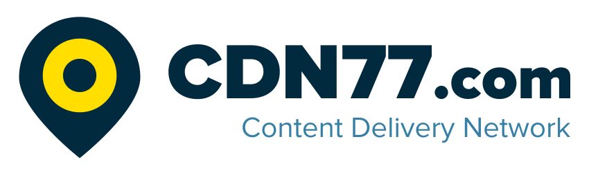
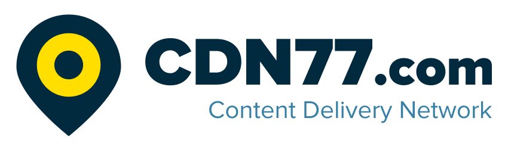
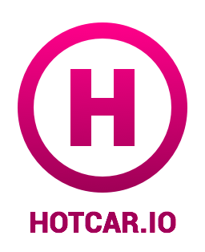
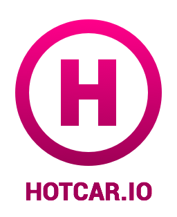

Backendisti #3
7. prosince 2016
od 18:00
Avast, Pikrtova 1737/1A
140 00 Praha 4
140 00 Praha 4
5 min
Backendisti #3 – Intro
50 min
Jak zvládá Kiwi.com miliardy zápisů do databáze denně?
V přednášce se podíváme více do detailu na celou architekturu databází Kiwi.com. Podíváme se na to, jak používají PostgreSQL, BigQuery, Hive & Presto a další nástroje.
Jozef Képesi

V přednášce se podíváme více do detailu na celou architekturu databází Kiwi.com. Podíváme se na to, jak používají PostgreSQL, BigQuery, Hive & Presto a další nástroje.
Jozef Képesi
20 min
Téma bude upřesněno


20 min
Téma bude upřesněno
Předchozí setkání
Zajímají tě videa a programy minulých Backendistů? Stačí se podívat na předchozí setkání.
Backendisti #2 [en]
24th October 2016
18:00–20:30
STRV, Praha 8,
Rohanské nábřeží 678/23
Rohanské nábřeží 678/23
This event was entirely in English
5 min
Backendisti #2 – Intro
50 min
Building backends for Mobile in Google Cloud Platform
Jerry is a long-time systems engineer who has worked with a variety of technologies, both as an employee and an entrepreneur in many business areas. His passions include (but are not limited to) security, cloud computing, containers, microservices, (mobile) backends, and big data analytics. He is currently working with multiple programming languages and frameworks, and is always on the lookout for the "next big thing".
Jerry Jalava

Jerry is a long-time systems engineer who has worked with a variety of technologies, both as an employee and an entrepreneur in many business areas. His passions include (but are not limited to) security, cloud computing, containers, microservices, (mobile) backends, and big data analytics. He is currently working with multiple programming languages and frameworks, and is always on the lookout for the "next big thing".
Jerry Jalava
20 min
Application Diagnostics in Microsoft Azure
Do you really want to have your application under the control? You should! Microsoft Azure offers many useful tools, features and great Application Insights service which provide perfect health overview of your application, information about performance, exceptions and availability.
Miroslav Holec
Do you really want to have your application under the control? You should! Microsoft Azure offers many useful tools, features and great Application Insights service which provide perfect health overview of your application, information about performance, exceptions and availability.
Miroslav Holec
15 min
REST API is dead. Long live GraphQL
REST became de-facto standard for APIs. But today it stops to be the best choice as API for user interface. Facebook offered us GraphQL and wonderful library Relay. Relay makes working with data in apps much easier and also faster.
Petr Ferschmann
REST became de-facto standard for APIs. But today it stops to be the best choice as API for user interface. Facebook offered us GraphQL and wonderful library Relay. Relay makes working with data in apps much easier and also faster.
Petr Ferschmann
3 h
Networking
Networking session and free beer in STRV's rooftop bar Scrollbar
Networking session and free beer in STRV's rooftop bar Scrollbar
Backendisti #1
16. června 2016
18:00–20:30
Node5, Praha 5
Radlická 180/50
Radlická 180/50
5 minut
Backendisti #1 – Úvod
40 minut
Na čem jedou v Keboole?
Ukážeme si jak vypadá architektura datové platformy Keboola Connection, jakým způsobem jí spravujeme a monitorujeme. Jak se během posledních čtyř let vyvíjela, co nás čeká dál, jakým způsobem a proč míříme do její kontejnerizace? Povíme si o VPC, IAM, Autoscaling, Cloudformation, Lambda a dalších službách které (ne)využíváme. Jako bonus sladkokyselé zkušenosti se supportem.
Martin Halamíček
Ukážeme si jak vypadá architektura datové platformy Keboola Connection, jakým způsobem jí spravujeme a monitorujeme. Jak se během posledních čtyř let vyvíjela, co nás čeká dál, jakým způsobem a proč míříme do její kontejnerizace? Povíme si o VPC, IAM, Autoscaling, Cloudformation, Lambda a dalších službách které (ne)využíváme. Jako bonus sladkokyselé zkušenosti se supportem.
Martin Halamíček
10 minut
Hlavně rychle a levně aneb cloud pro socky
Vývoj, nasazení a provoz webových aplikací stojí spoustu času a peněz. Obzvláště pokud jste dost šílení a uvažujete o vlastním hardwaru, server housingu, operations a podobných reliktech z dob raných devadesátek. Nota bene pokud permanentně čelíte riziku, že produkt nebude úspěšný nebo ho budete potřebovat rychle změnit. Nejenom projekt HotCar.io mě naučil efektivně a levně používat AWS. V pár minutách vám ukážu jak na to.
Roman Pichlík

Vývoj, nasazení a provoz webových aplikací stojí spoustu času a peněz. Obzvláště pokud jste dost šílení a uvažujete o vlastním hardwaru, server housingu, operations a podobných reliktech z dob raných devadesátek. Nota bene pokud permanentně čelíte riziku, že produkt nebude úspěšný nebo ho budete potřebovat rychle změnit. Nejenom projekt HotCar.io mě naučil efektivně a levně používat AWS. V pár minutách vám ukážu jak na to.
Roman Pichlík

10 minut
Přechod z monolitu na servisní architekturu
Ve společnosti ROI Hunter postupně převádíme naši aplikaci z monolitické architektury na mikroslužby. Některé mikroslužby jsou již funkční, na dalších stále pracujeme. Zmíníme, proč jsme se rozhodli přejít na mikroslužby, zda se nám již vrátila časová investice do vývoje mikroslužeb, co se zdařilo a co by bylo lepší provést jinak. Samozřejmě se nevyhneme technologiím, které u nás používáme - jde zejména o Javu, Spring (resp. na mikroslužbách hlavně Spring Boot), Python, Hibernate, Postgres, MongoDB, RabbitMQ, Docker, Redis a Node.js.
Josef Hertl
Ve společnosti ROI Hunter postupně převádíme naši aplikaci z monolitické architektury na mikroslužby. Některé mikroslužby jsou již funkční, na dalších stále pracujeme. Zmíníme, proč jsme se rozhodli přejít na mikroslužby, zda se nám již vrátila časová investice do vývoje mikroslužeb, co se zdařilo a co by bylo lepší provést jinak. Samozřejmě se nevyhneme technologiím, které u nás používáme - jde zejména o Javu, Spring (resp. na mikroslužbách hlavně Spring Boot), Python, Hibernate, Postgres, MongoDB, RabbitMQ, Docker, Redis a Node.js.
Josef Hertl
10 minut
Docker a Kubernetes jsou bájo
V Bayo, služba pro C2C prodej a nákup, potřebujeme rychle zkoušet nové věci, rychle je nasazovat a škálovat, když budou fungovat, a rychle je zahazovat, když fungovat nebudou. Docker, Kubernetes a AWS jsou skvělá kombinace, jak toho docílit. Krátký vhled do toho, jak řešíme lokální vývoj pomocí Dockeru a nasazování do cloudu přes Kubernetes.
Jakub Kulhan

V Bayo, služba pro C2C prodej a nákup, potřebujeme rychle zkoušet nové věci, rychle je nasazovat a škálovat, když budou fungovat, a rychle je zahazovat, když fungovat nebudou. Docker, Kubernetes a AWS jsou skvělá kombinace, jak toho docílit. Krátký vhled do toho, jak řešíme lokální vývoj pomocí Dockeru a nasazování do cloudu přes Kubernetes.
Jakub Kulhan
Líbí se ti setkání? Tak sdílej!